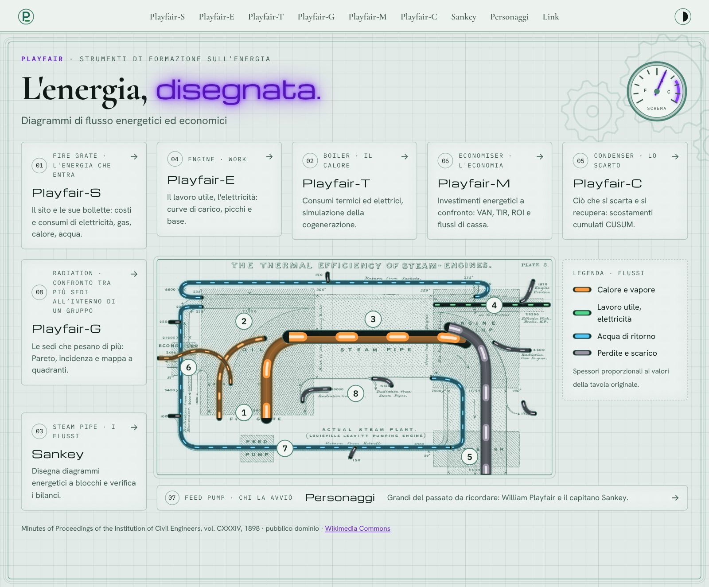
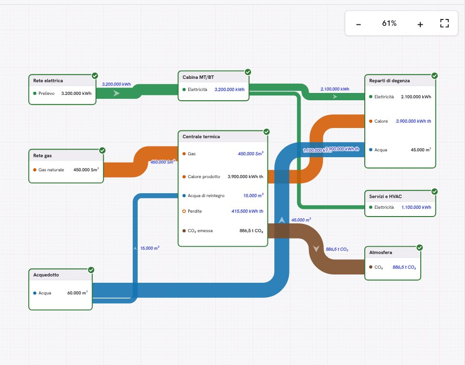

Strumenti di formazione sull'energia dedicati a William Playfair (1759–1823), inventore dei grafici a linee, a barre e a torta. Un progetto di Stato Critico.
curva… / termico…).;, prima riga con i nomi delle colonne; i file d'esempio mostrano la struttura attesa.
| Strumento | A cosa serve | File e colonne attese |
|---|---|---|
| Playfair-SSite | Costi e consumi mensili di un sito (elettricità, gas, teleriscaldamento, acqua); energia primaria in TEP, emissioni di CO₂, Rolling 12 e MAT (totale mobile annuo). | N_consumi.csv — colonne anno;mese;consumo_*;costo_* (una coppia consumo/costo per vettore). |
| Playfair-EElectric | Curva di carico oraria con fasce F1/F2/F3, curva di durata e ore equivalenti, vista multi-ora, carpet plot, box plot. | N_curva_di_carico.csv — data;ora;kWh con ora da 1 a 24. |
| Playfair-TThermal | Confronto consumi elettrici e termici orari, simulazione della cogenerazione in tre modalità, confronto costi con e senza CHP. | N_curva_di_carico.csv + termico_sito_N.csv — data;ora;kWh oppure valori mensili. |
| Playfair-GGroup | Gruppo di sedi: consumo specifico (consumo ÷ dimensione), incidenza sul totale, Pareto 80/20 e mappa a 4 quadranti delle priorità; tabella ordinabile, CSV e PNG. | Una riga per sede: codice; (es. m² e kWh); unità nell'intestazione o in una 2ª riga. |
| Playfair-MMoney | Confronto di investimenti: VAN, TIR, MIRR, ROI, payback, PI, DSCR, LLCR; tasso di sconto o WACC, eventi di cassa, grafico log-log. | investimenti_energetici_v2.csv — nome;; numeri col punto decimale. |
| Playfair-CCusum | Monitoraggio secondo ISO 50006: regressione consumo/driver, residui e carta CUSUM. | consumo_cusum.csv — 2 colonne: consumo e driver; la seconda riga contiene le unità. |

Scorciatoie B L V blocco · collegamento · seleziona · A aggiorna · Canc elimina · Esc esci / deseleziona · ←↑→↓ sposta (Maiusc ×5) · Ctrl+Z/Y/D/A/S annulla · ripeti · duplica · seleziona tutto · salva · rotella o + − 0 zoom · Spazio+trascina sposta la vista · Invio/F2 modifica il blocco